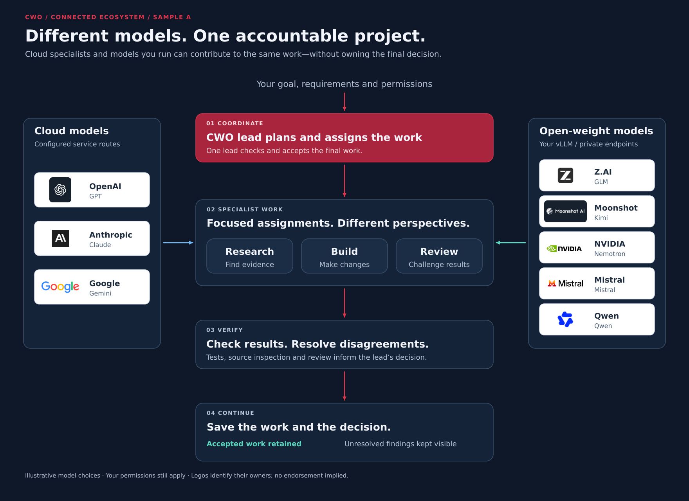
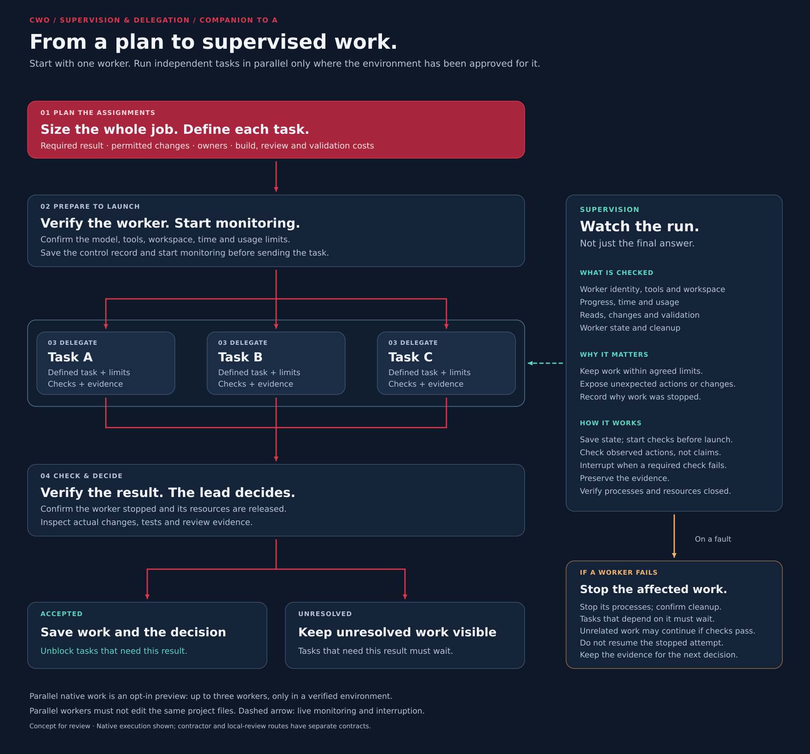
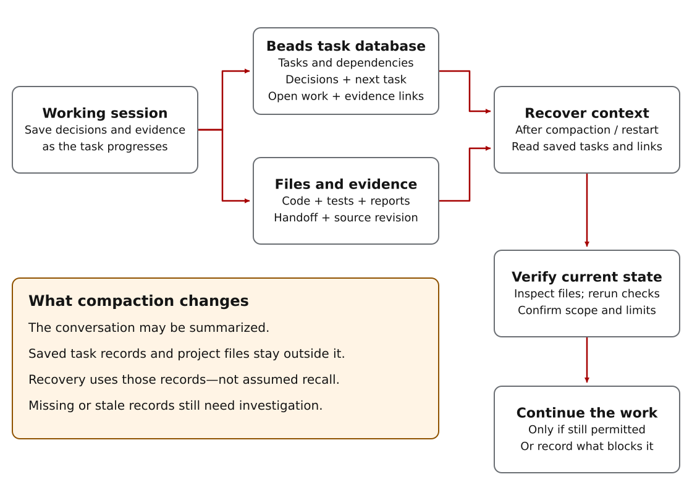
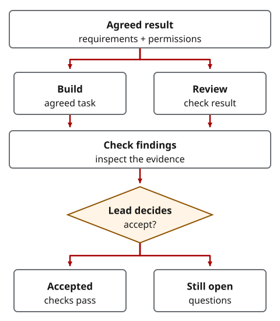

A Codex skill for project work
Delegate the work.
Keep the definition of done.
Bring cloud models and models you serve through vLLM into the same project as specialist reviewers. vLLM is a model-serving engine you can run on your own infrastructure. Give them focused questions, investigate their findings, and retain the requirements and decisions later tasks depend on. One lead agent coordinates the work; you set the outcome and permissions.
CWO is a reusable set of instructions and helper tools for Codex. It helps you define what counts as finished, check model responses and preserve verified work across tasks and sessions. Optional tools compare claims from separate reviews; the lead checks the evidence and decides what proceeds.
No model gets implicit trust. CWO treats public-cloud and open-weight models as untrusted contributors. The lead is not exempt. Using a model without guardrails is a choice to trust it implicitly. Limit its access, check its work and keep consequential actions within your permissions. Guardrails reduce risk; they do not make the model trustworthy.
Inspect the comparison example · Install CWO
New to project agents? Try the guided practice example.
Development-stage skill. Some safeguards are instructions, not enforced restrictions. Native workers also require model, tool and host qualification.
Plan, compare and decide
Plan across models. Keep one accountable lead.
Choose contributors around the problem, not just one provider. The lead compares findings, works through disagreements and turns supported evidence into a plan. Cloud and open-weight models are options for approved assignments—not interchangeable permissions to run any task.

Review: why zero trust?
Useful work does not require blind trust.
CWO treats both public-cloud and open-weight model output as untrusted input—not authority. It limits assignments, checks evidence and uses permissions, sandboxing and supervision where the route supports them.
Think of intelligence tradecraft: an asset can be useful without being trusted. Limit access, corroborate reports and keep consequential decisions with an accountable lead.
These guardrails manage risk; they do not make a model trustworthy or guarantee safety. Understand the checks and limits.

Read the architecture diagram in text
- You define the goal, requirements and permissions. One CWO lead plans and assigns the work.
- Cloud options include OpenAI, Anthropic and Google; open-weight families include Z.AI, Moonshot, NVIDIA, Mistral and Qwen through configured local or private endpoints such as vLLM. Names identify their owners, not endorsements or guaranteed support.
- Specialists can research, build or review through their approved routes. Findings are checked, disagreements resolved and the lead decides what can be accepted.
- Accepted work and decisions are retained; unresolved findings remain visible. Architecture and review do not themselves authorize worker execution.
Execution, supervision and delegation
Turn the plan into supervised work.
Native delegation means assigning work to another Codex agent. First size the whole assignment, verify the exact worker and its limits, and start monitoring before sending the task. Use one worker by default. Fanout means running independent assignments in parallel—not giving several agents uncontrolled access to the same files.


Read the supervision diagram in text
- Size the full job, including execution, review and validation. Give each task an owner, permitted changes, checks and limits.
- Confirm the model, tools, workspace, time and usage allowance. Save control state and register monitoring before dispatch. Parallel workers need approved capacity and separate write ownership.
- The supervisor checks observed identity, tools, actions, changes, progress, usage and lifecycle—not just a success claim. It can interrupt when a required check fails; verify that its processes and resources have actually stopped.
- The lead inspects actual changes, tests and review evidence before accepting the result. Accepted results can unblock dependent tasks; unresolved results keep those tasks waiting.
- After a fault, stop at the required scope and verify cleanup. Unrelated work may continue only if its own permission, dependency and remaining-budget checks pass. Stopped attempts are terminal; a successor needs a fresh allowance and its own launch checks.
From request to reviewed plan
Get second opinions before the first patch.
Start with Prompt Coach: define the result, size the whole job and choose which questions need another model. The lead drafts a plan, gets separate reviews when they are worth the cost, then synthesizes the findings into specific changes—not a vote.
The initial plan: “retry twice.”
You want a job-submission client to recover from timeouts without creating duplicate jobs. Retrying sounds reasonable—but a timeout does not tell you whether the server already created the job.
Two second opinions change the plan.
A cloud reviewer challenges that assumption. A local vLLM reviewer asks what happens after a client restart. The revised plan must check server-side duplicate protection and test lost replies and restarts before enabling retries.
Follow the initial plan, review findings and revised work plan · Copy the planning request.
Illustrative planning example, not recorded model responses. The lead checks the findings; review does not authorize implementation.
Durable project memory
Keep project decisions beyond the conversation.
In a long conversation, compaction summarizes earlier messages to fit the model’s working context. Details can fall out of view. A fresh session may not have that conversation at all.
Beads is the task database CWO uses for durable project memory. It stores tasks and dependencies. CWO uses task notes and linked records to preserve accepted decisions, open questions and the permitted next action. Code, tests and saved reports remain in project files.

After compaction or a restart, CWO reads the relevant task records and evidence, checks the current files and remaining limits, then continues permitted work. It preserves accepted work rather than silently starting over.
This is recovery from saved project state, not perfect model recall. Missing or stale records still need investigation; unsaved details cannot be recovered by assumption.
Local models. Separate findings. Checked decisions.
Make specialist review change the decision.
A useful second review identifies something to check—not just another answer to read. The component tests below are small automated tests of individual CWO helpers, using deliberately written responses. They show response handling and claim comparison, not live model conversations.
Component tests · deliberately written responses
A local answer must be usable before it counts.
One test accepts a complete structured local response. Another rejects an advertised model mismatch before sending the review request. An incomplete final answer is withheld and represented by a hash, not reused as a review.
Separate tests check whether a local finding may support the project decision directly. These are distinct component checks, not a single live endpoint run.
Comparison test · deliberately written claims
Two inputs describe different encryption settings.
The test supplies AES-256-GCM and AES-128-CBC for the same setting. CWO retains both claims and reports the disagreement; required comparison leaves the combined review blocked pending resolution. Matching claims produce information, not a verdict that the setting is correct.
The lead still needs to inspect the implementation. This test is not a local-versus-cloud conversation or a completed investigation.
Comparing separate review responses requires an explicitly invoked Python API; it is not an automatic stage of every review. Different models can contribute useful evidence; adding models does not guarantee better answers. Understand model and source diversity.
Keep the decision connected to the work
An evaluation changes halfway through
Save the test cases, scoring and selection rule before comparing approaches. Repair a broken test runner without quietly changing what it measures. The protocol validator checks these recorded fields when invoked; it does not detect every change in intent.
Inspect the protocol validatorReviewers give conflicting advice
Check what each reviewer actually inspected and what supports each finding. Invoke the structured helper to compare explicit claims when the inputs meet its rules; keep unresolved findings visible. Agreement alone is not a correctness check.
Inspect claim comparison and its conditionsOne worker fails, but other work may continue
Record the failure, verify that the worker has stopped, and check its files and remaining allowance. Continue unrelated work only if it is still permitted and safe. A stopped attempt is not silently restarted.
See what to check after a worker stopsCompaction or a new session hides earlier details
Save the accepted behavior, tests and task dependencies. CWO reads that record and checks the current files before starting work that relies on it.
See how project memory survives the conversation
Recorded agent work
What review and a fresh session changed.
- A review found a failure the tests missed
- A documentation-checking command was extended to produce JSON reports. Its first change passed eight tests. Independent review found a filename-encoding failure; the lead reproduced it, fixed JSON escaping and added a test that runs the actual command. Inspect the finding and correction.
- A fresh session preserved the accepted behavior
- One session fixed a Python program that checks server names and port numbers. A fresh session read the saved requirements and tests before adding its terminal command; eleven project tests passed. Inspect the continuation record.
These small local cases demonstrate review and continuation, not native concurrency or comparative productivity. The continuation record describes an earlier tutorial run; the current split presentation has not had a new two-session agent run.
Workflow designs to adapt
Apply the same discipline to a larger decision.
Compare configuration converters against unchanged requirements, or design retries that do not create duplicate jobs. These specifications identify the problem, existing CWO components and checks an integrated demonstration would need. Neither has been run end to end.
What CWO adds to Codex and Beads
Codex can plan, edit, use tools and delegate. Beads stores tasks and their dependencies. CWO connects them through instructions for planning, reviewing and continuing project work. It uses a system prompt optimized for complex project work rather than the default OpenAI system prompt, plus helpers that check assignments and execution on supported routes.
A prompt tells an agent what to do; an enforced control can prevent a forbidden action. CWO uses both, but its instructions cannot replace the host’s tool permissions or sandbox. See the code-backed capabilities and ecosystem comparison.
Use the structure when a changed assumption, disputed review or fresh session could invalidate later work. Skip it for a short disposable task you can finish and verify in one conversation. Records, specialist calls and rechecks consume time and model quota.
See the compact requirements-to-decision flow

Take the route that fits your work
- Already using agents
- Choose a task: compare approaches without changing the requirements, resolve conflicting reviews, check a handoff or recover after a worker stops.
- Want to inspect the evidence first?
- Explore the examples. Proposed workflows, authored exercises and observed work are labeled separately.
- New to project agents
- Set up CWO and try the practice example, then continue it in a fresh session.
Status and boundaries
CWO is a development-stage public skill package. Your configured model provider receives selected project context. Additional outside review is off by default. Native delegation requires verification of the exact worker, tools and host. See setup, compatibility and troubleshooting.